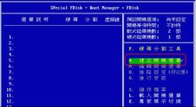
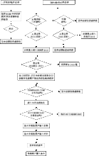
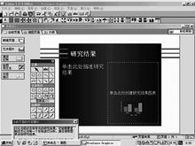

dos，是磁盘操作系统的缩写，是个人计算机上的一类操作系统。从1981年直到1995年的15年间，磁盘操作系统在IBM PC 兼容机市场中占有举足轻重的地位。而且，若是把部分以DOS为基础的Microsoft Windows版本，如Windows 95、Windows 98和Windows Me等都算进去的话，那么其商业寿命至少可以算到2000年。微软的所有后续版本中，磁盘操作系统仍然被保留着。
从1981年MS-DOS1.0直到1995年MS-DOS7.1的15年间，DOS作为微软公司在个人计算机上使用的一个操作系统载体，推出了多个版本。DOS在IBM PC 兼容机市场中占有举足轻重的地位。可以直接操纵管理硬盘的文件，以DOS的形式运行。
是一个更久远的操作系统CP/M的翻版。DOS家族包括MS-DOS、PC-DOS、DR-DOS、Free-DOS、PTS-DOS、ROM-DOS、JM-OS等，其中以MS-DOS最为著名，最自由开放的则是Free-DOS。虽然这些系统常被简称为"DOS"，但没有任何一个系统单纯以"DOS"命名（只有一个毫无关连的1960年代IBM大型主机操作系统以此命名）。此外，有几个和DOS无关、在非x86的微计算机系统上运行的磁盘操作系统在名称中也有"DOS"字眼，而且在专门讨论该机器的场合中也会简称为"DOS"（例如：AmigaDOS、AMSDOS、ANDOS、Apple DOS、Atari DOS、Commodore DOS、CSI-DOS、ProDOS、TRS-DOS等），但这些系统和DOS可执行文件以及MS-DOS API并不兼容。
- 中文名
- 磁盘操作系统
- 外文名
- Disk Operating System
- 外语缩写
- DOS
- 开发商
- 微软公司
- 类 别
- 计算机操作系统
DOS名称由来
磁盘操作系统是个人计算机上的一类操作系统。从1981年直到1995年的15年间，DOS在IBM PC 兼容机市场中占有举足轻重的地位。而且，若是把部份以DOS为基础的Microsoft Windows版本，如Windows 95、98和Windows Me等都算进去的话，那么其商业寿命至少可以算到2000年.[2]
家族包括MS-DOS、PC-DOS、DR-DOS、PTS-DOS、ROM-DOS、JM-OS等，其中以MS-DOS最为著名。虽然这些系统常被简称为"DOS"，但几乎没有系统单纯以"DOS"命名（只有一个毫无关连的1960年代IBM大型主机操作系统以此命名）。此外，有几个和DOS无关、在非x86的微计算机系统上运行的磁盘操作系统在名称中也有 "DOS" 字眼，而且在专门讨论该机器的场合中也会简称为"DOS"（例如：AmigaDOS、AMSDOS、ANDOS、AppleDOS、Atari DOS、Commodore DOS、CSI-DOS、ProDOS、TRS-DOS等），但这些系统和DOS可执行文件以及MS-DOS API并不兼容。
DOS发展简史
DOS是1979年由微软公司为IBM个人电脑开发的MS-DOS,它是一个单用户单任务的操作系统。后来DOS的概念也包括了其它公司生产的与MS-DOS兼容的系统，如PC-DOS[3]
、DR-DOS, 以及一些其它相对不太出名的DOS兼容产品。它们在1985年到1995年及其后的一段时间内占据操作系统的统治地位,最著名和广泛使用的DOS系统从1981年直到1995年的15年间微软在推出Windows 95之后，宣布MS-DOS不再单独发布新版本。不过FreeDOS等与MS-DOS兼容的DOS则在继续发展着。
虽然大多数用户将1981年最早发表的术语“PC”与IBM PC或PC兼容机等同看待， 但是实际上个人计算机在1970年已经开始使用。DOS是IBM PC及其兼容机用的操作系统。在DOS之前，一些微机为其操作系统使用内部BASIC编程语言，而另外一些使用Digital Research公司开发的CP/M操作系统（此公司提供了DR DOS）。Microsoft公司于1970年后开发了MS-DOS，当时，该公司为不同微机开发了像BASIC这类编程语言；1980年IBM正在设计最早的IBM PC并请Microsoft为其新型机开发多个编程语言。这次CP/M作为选择的操作系统并成为IBM新机种的操作系统。在Microsoft为IBM PC 设计语言的过程中，尽管Microsoft公司改进了IBM PC的语言设计和应用程序设计，但是他们认识到开发PC操作系统才是其努力方向。然而，由于没有足够的时间从零开始开发一个操作系统。为解决这个问题，Microsoft购买了一个用于8086处理器的操作系统86-DOS，86-DOS操作系统是西雅图电脑产品公司（Seattle Computer Products）的一名24岁的程序员蒂姆·帕特森（Tim Paterson）花费了四个月时间编的，该操作系统与最早的IBM PC中的8086处理器非常相似。给每台IBM电脑安装一个DOS系统，微软就收取200美金的商业运作模式，造就了微软的初期辉煌。
发展历程
随着电脑硬件的不断发展，从Windows 95到Windows XP再到的Windows 7以及2012年发布的Windows 8中，MS-dos的核心依然存在，只是加上Windows当作系统的图形界面，直到纯32 位版本的Windows系统（从Windows NT开始，其中就包含了 Windows 2003、Windows XP、Windows Vista、Windows 7和Windows 8）。由此可见dos的生命力极强。例如系统还原和安装都需要DOS，DOS用起来也很方便。
DOS是个非常实用的操作系统，因此，它深深受到国内外人们的普遍喜爱，一直拥有数以亿计的用户。但是，自从1995年以来，Microsoft公司出于商业利益等方面的原因，决定抛弃手中的MS-DOS。当时，DOS已有许多种，除MS-DOS以外，还有PC-DOS，DR-DOS，FreeDOS等，但是由于受到Microsoft公司的挤压，故使用的人数不多，而大多数用户都在使用MS-DOS。由于Microsoft彻底放弃了MS-DOS，而转以开发Windows，引起了广大DOS使用者和爱好者的不满，而且，大家通常所使用的Windows 9x也只是DOS下的一个大型程序罢了，如果没有DOS的支持，它根本无法运行。但也由此可见DOS的功能其实是非常强大的，以及DOS软件拥有巨大的开发潜能，因为像Windows那样强大的DOS增强程序都可以编出来。
比较
Windows是一个多任务的操作环境，但它对程序编写的约束和限制比DOS高得多，因而许多程序员出于对Windows的不满及对DOS开发的价值和潜力的深刻认识，继续开发DOS软件。由于多年的经验的积累，他们的软件开发水平越来越高，因此他们开发出的DOS软件的质量也越来越高。为了开发更多的软件并且增加开发的效率，他们设计了一个又一个DOS软件的开发工具。而用这些开发工具的人也越来越多，并在国外迅速地流传开来，详情可见一篇叫作“DJGPP程序与保护模式”的文章（在“DOS文章”栏目中）。一个尤为重要的是，正如上文所提到，虽然MS-DOS已经不再继续发展了，但并不意味着整个DOS也不再继续发展了。MS-DOS的最高版本是8.0（包含在Windows ME中），随后Microsoft开始开发基于Windows NT构件的Windows，才成了真正独立的操作系统。除了MS-DOS以外，其它的DOS也在发展着。仍在不断发展和更新中的DOS有FreeDOS、PTS-DOS、ROM-DOS等，这些DOS的功能都十分强大，往往超过MS-DOS，而且FreeDOS还是完全免费且自由开放的。因此，程序员们完全可以为它们开发新的DOS软件，而不必依赖于MS-DOS。这大概是90年代末DOS的情况。
现状
随后，一项叫作“开放源代码运动”的活动兴起了。很多程序员和使用者出于对Microsoft的Windows横行霸道的不满，离开了Windows阵营。取而代之的是兴起了对其它操作系统软件的开发，如DOS，Linux等。这一下设计和开发DOS软件的人迅速增加，并纷纷组成了开发团体，以开发新的DOS和其它非Windows的操作系统的软件，详情可见一篇叫作“DOS和Linux近年来的发展比较”的文章。由于开发者的增多，原先的DOS软件开发器也开始了进一步的更新，而且支持FAT32和长文件名。再加上这次开发软件的有许多是程序员中的精英，所以开发出来的DOS软件的质量自然是今非昔比了。比如，由于Allegro等编程库的出现，在DOS下实现MP3等音乐的播放对他们来说已是轻而易举的了。以这些软件为代表的DOS软件和原来的DOS软件，如DOSAMP，GDS Viewer等的质量相比有着本质的提高。原来认为非常强大的SEA看图软件，也只是个一般强大的软件罢了。另一个很重要的变化在于对FAT32及长文件名的支持。DJGPP程序已经实现了在LFN API存在的情况下对长文件名的完美支持。总之，这些新的DOS软件的整体水平的提高是很显著的。为了挑战Windows的界面，程序员们（经常是集体合作）开发了一个又一个仿Windows的界面增强程序，著名的有Seal,Qube,WinDOS等等。还有人开发出了内核为32位的DOS操作系统，如FreeDOS 32，事实证明，这些程序的编写水平是很高的。这些软件都在不断地开发中，所取得的成绩是有目共睹的。而且它们最显著的特点就是自由开放的发展，如上面所提到的SEAL、FreeDOS 32等等都是遵守著名的GNU GPL协议的自由软件。
历史概述
DOS是Disk Operation System(磁盘操作系统）的简称，是个人计算机上的一类操作系统。它直接操纵管理硬盘的文件，一般都是黑底白色文字的界面。从1980年到1995年的15年间，DOS在IBMPC兼容机市场中占有

DOS系统
举足轻重的地位。当时，电脑操作系统就是DOS，键入DOS命令运行，其他应用程序，都是在DOS界面下键入EXE或BAT文件运行。早期的DOS系统是由微软公司为IBM的个人计算机开发的，称为MS-DOS。后来，其他公司生产的与MS-DOS兼容的操作系统，也延用了这个称呼，如PC-DOS、R-DOS等等。1980-1981年，西雅图电脑产品公司程序员蒂姆·帕特森（Tim Paterson）花费了四个月时间编写出了86-DOS操作系统。1981年7月，微软以五万美元的代价向西雅图公司购得本产品的全部版权，并将它更名为MS-DOS。随后，IBM发布了第一台个人计算机，当时采用的操作系统是西雅图公司的86-DOS 1.14，但微软很快改进了MS-DOS，并使它成功地成为IBM PC采用的操作系统。并于1981年8月12日，正式发布MS-DOS 1.0和PC-DOS 1.0。
DOS1.0微软买下 86-DOS（Qdos）版权。1981年7月成为IBM PC上 第一个作业系统。同时微软又为IBM PC开发专用版本 PC-DOS，但与泛用版本DOS相比，除了系统档名以及部份针对 IBM 机器设计的核心，外部命令与公用程式之外，其余程式码差异不大。[3]
现今中国人已经可以成功的在x86架构的下使用中文版MS-DOS（MS-DOS 6.22)，操作变得更加直观便捷。
DOSDOS
DOS定义
DOS是英文Disk Operating System的缩写，意思是“磁盘操作系统”，顾名思义，DOS主要是一种面向磁盘的系统软件。说得简单些，DOS就是人与机器的一座桥梁，是罩在机器硬件外面的一层“外壳”，有了DOS，就不必去深入了解机器的硬件结构，也不必去死记硬背那些枯燥的机器指令。只需通过一些接近于自然语言的DOS命令，就可以轻松地完成绝大多数的日常操作。此外，DOS还能有效地管理各种软硬件资源，对它们进行合理的调度，所有的软件和硬件都在DOS的监控和管理之下，有条不紊地进行着自己的工作，但是在操作不慎情况下也会死机。

DOS磁盘操作系统(18张)
- 当进入该系统时，内部指令可以由系统间接调用。
- DOS 操作系统用户指令是不区分大小写的。例如：DIR、Dir、dir在DOS中的执行含义是一致的。
DOS组成
完整的DOS由五部分组成：
DOS软件

Lotus 界面
Lotus 1-2-3：一套在企业市场中被广泛运用的电子表格软件。被许多人视为 IBM PC 成功的主因。在MS-OfficeExcel出现之前被广泛使用，随着Excel的出现，大部分用户转向使用Excel。
WordPerfect：一套出在 DOS 平台的文本编辑器。
BASIC：DOS下最普遍的计算机编程系统，有GBASIC、QBASIC等分支，是当时计算机初学者启蒙语言。
PCTools（PCShell）：DOS下文件管理软件，可进行绝大多数文件操作。
Telix:调制解调器通信软件。
Arachne：一套 DOS 版的网络浏览器。
UCDOS：是基于MS-DOS,由中国人自己编制的中文操作系统。
TurboC：是一个高效的编译程序。
DOS常用命令
DOS磁盘操作
fdisk参数 /mbr 重建主引导记录 EXP:fdisk /mbr 重建主引导记录 （可以洗掉还原精灵）
format 参数： /q 快速格式化 /u 不可恢复 /autotest 不提示 /s 创建 MS-DOS 引导盘 EXP:format c: /q /u /autotest
自动快速格式化C盘(危险!!!)
format 参数： /q 快速格式化 /u 不可恢复 /autotest 不提示 /s 创建 MS-DOS 引导盘 EXP:format c: /q /u /autotest
自动快速格式化C盘(危险!!!)
DOS目录操作
DIR [目录名或文件名] [/S][/W][/P][/A] 列出目录 参数: /s 查找子目录 /w 只显示文件名 /p 分页 /a 显示隐藏文件 EXP: DIR format.exe /s查找该盘的format.exe文件并报告位置
CD [目录名] PS:可以使用相对目录或绝对目录 进入目录 exp:CD AA 进入当前文件夹下的AA目录,cd .. 进入上一个文件夹cd \返回根目录;cd c:\windows 进入c:\windows文件夹
MKDIR [目录名] 创建目录 EXP:MKDIR HELLOWORLD 创建HELLOWORLD目录
CD [目录名] PS:可以使用相对目录或绝对目录 进入目录 exp:CD AA 进入当前文件夹下的AA目录,cd .. 进入上一个文件夹cd \返回根目录;cd c:\windows 进入c:\windows文件夹
MKDIR [目录名] 创建目录 EXP:MKDIR HELLOWORLD 创建HELLOWORLD目录
建立目录
1．功能：创建新的目录，注意：此处目录在Windows操作系统里被称为“文件夹”。
2．类型：内部命令
3．格式：MD [盘符：][路径名]<子目录名>
改变目录
1．功能：显示当前目录
2．类型：内部命令
3．格式：CD[盘符:][子目录名]
删除目录
1．功能：从指定的磁盘删除目录。
2．类型：内部命令
3．格式：RD[盘符：][路径名][子目录名]
查看目录
1．功能：显示磁盘目录的内容。
2．类型：内部命令
3．格式：DIR [盘符:][路径][文件名] [/A[[:]属性]] [/C] [/D] [/L] [/N] [/O[[:]分类属性]] [/P] [/Q] [/S] [/T[[:]时间]] [/W] [/X] [/4]
显示目录
1．功能：显示指定驱动器上所有目录路径和这些目录下的所有文件名。
2．类型：外部命令
3．格式：TREE[盘符:][/F][>PRN]
删除目录
1．功能：将整个目录及其下属子目录和文件删除。
2．类型：外部命令
3．格式：DELTREE [盘符:]<路径名>
DOS文件操作
del [目录名或文件名] [/f][/s][/q] 删除 参数:/f 删除只读文件 /s 删除该目录及其下的所有内容 /q 删除前不确认
exp: del c:\del /s /q 自动删除c盘的del目录
copy [源文件或目录] [目标目录] 复制文件 EXP:copy d:\pwin98\*.* c:\presetup 将d盘的pwin98的所有文件复制到c盘的presetup下
exp: del c:\del /s /q 自动删除c盘的del目录
copy [源文件或目录] [目标目录] 复制文件 EXP:copy d:\pwin98\*.* c:\presetup 将d盘的pwin98的所有文件复制到c盘的presetup下
DOS系统分类
DOS家族包括MS-DOS、PC-DOS、DR-DOS、FreeDOS、PTS-DOS、ROM-DOS、JM-OS和CC-DOS、UC-DOS等，其中以MS-DOS最为著名。DOS是一个更久远的操作系统CP/M的翻版。虽然这些系统常被简称为“DOS”，但没有任何一个系统单纯以“DOS”命名（只有一个毫无关联的1960年代IBM 大型主机作业系统以此命名）。此外，有几个和DOS无关,在非x86(32位)的微电脑系统上执行的磁碟作业系统在名称中也有“DOS”字眼，而且在专门讨论该机器的场合中也会简称为“DOS”（例如：AmigaDOS、AMSDOS、ANDOS、AppleDOS、Apad DOS，）UC-DOS 是中文汉字操作系统，是国内对原系统进行的汉化。
DOS设计架构
所有DOS类的操作系统都是在使用Intelx86或其兼容CPU的机器上运行的（主要是IBM PC及其兼容机）。最早的时候，DOS 并未受限于此；为了在许多以x86为基础，但和 IBM PC 不兼容的机器上运行，产生了不少特定机器版本的 DOS 及类似的操作系统。[1]
磁盘操作系统是单一用户、单工的操作系统，拥有不可重入的基本核心函数（意即同时间只能有一个程序调用这些函数）。有一个例外的状况，就是常驻程序（Terminate and Stay Resident，缩写为 TSR）。某些常驻程序允许用户多任务操作；然而此时仍有“核心不可重入”的问题：当一个进程 (process) 调用了操作系统核心中的服务函数（也就是系统调用）时，在这个调用退出之前，其他的进程绝对不能进行系统调用、打断第一个进程。[2]
DOS磁盘命名法
在DOS中，磁盘驱动器是利用不同的字母命名的。标准的作法是保留"A"和"B"给软盘驱动器。若是系统只有一台软盘驱动器的话，DOS允许这台软盘驱动器同时使用这两个代号，然后DOS会要求用户更换磁片。这么做可以让用户把文件拷贝到不同的软盘上，或是运行某一片软盘上的程序，然后把数据文件存放在另一片软盘上。最早硬盘的代号为"C"和"D"。在一台硬盘驱动器上，[3]
DOS只允许一个活动分区的存在。随着支持的硬盘数量越来越多，磁盘代号的命名方法演变为：先将磁盘代号指派给每一颗硬盘驱动器的活动主分区，然后第二轮将代号指派给延伸分区中的逻辑磁盘区，第三轮再把代号指定给非活动的主分区。（前题是：它们存在，而且包含了DOS可以读取的文件系统。）最后，DOS才将代号指派给光盘驱动器、RAM disk，以及其他的硬件。一般来说，磁盘代号都是依照驱动程序的加载顺序，按字母顺序指派的，但驱动程序也可以要求DOS指派不同的字母。例如网络磁盘驱动器的驱动程序通常会指派最后的几个字母。[3]
因为DOS的应用程序会直接使用这些磁盘代号（和Unix类系统使用/dev目录的方法不同），因此若是新增了需要分配磁盘代号的硬件，可能会导致这些应用程序出错。举例来说：若是原本硬盘中的延伸分区中存在逻辑磁盘区，此时新增一颗有主分区的硬盘的话，由于主分区拥有较高的分配优先权，所以原本硬盘的逻辑磁盘区的代号就会改变。此外，就算是新增一颗只有延伸分区和逻辑磁盘区的硬盘，还是会影响到RAM disk及光盘驱动器的代号。这个问题一直到9x系列的Windows都仍然存在；NT系列才有解决方案：磁盘代号会保留给已存在的磁盘驱动器机，除非用户手动更改。[3]
DOS系统优点
DOS功能说明
DOS基本功能
- 执行命令和程序功能
- I/O管理功能
- 磁盘与文件管理功能
DOS主要功能
文件管理
特别要注意的是，DOS的文件管理中，对文件名采取8.3的命名方式，也就是说：主文件名为8个字符，扩展名（后缀）为3个字符。并根据扩展名来确定文件的打开方式，比如扩展名为.txt，则一般为文本文件，扩展名为.exe，表示可执行文件。进入windows操作系统后才支持长文件名管理。
设备管理
存储管理
DOS采用的是单一连续存储管理。
作业管理
作业是用户通过dos命令请求计算机系统完成的一个独立任务。一个
 dos控制台
作业可以包括输入、编译、连接、运行和输出等若干个处理步骤。作业管理就是许多个作业执行时进行必要的资源调度和作业处理过程控制。dos分内部命令和外部命令。
dos控制台
作业可以包括输入、编译、连接、运行和输出等若干个处理步骤。作业管理就是许多个作业执行时进行必要的资源调度和作业处理过程控制。dos分内部命令和外部命令。
 dos控制台
dos控制台
CPU管理
用户还可把多于一个的dos指令，加到*.bat批处理文件中批量执行。
DOS系统组成
DOS启动引导
DOS使用说明
在DOS环境下，电脑启动开机后，所呈现的不是桌面和图标，而是这样的电脑屏
Arachne 互联网浏览器
幕：C:\>叫做命令提示符，这个闪动的横线叫做光标。这样就表示电脑已经准备好，在等待用户输入指令。用户需要做的，就是对电脑发出指令，给电脑什么指令，电脑就会按照指令进行操作。那用户又怎么向电脑输入指令呢？
 Arachne 互联网浏览器
Arachne 互联网浏览器
比如:用户想看看几点钟了，就可以输入时间命令，敲入time四个字母，再敲回车键确认，这时屏幕上就显示出当前时间。再敲回车键，又出现提示符了，就可以输入下一条命令了。如果想看日期，输入date，然后敲回车键确认，这时屏幕上显示出当前日期。再敲回车键又回到提示符了。

在字符界面下，用户只能通过键盘输入字符来指挥电脑工作，电脑完成一个命令后，出现下一个提示符，用户就又可以给电脑下命令了。注意，在DOS下电脑一次只能做一件事，做完以后才能开始下一件事；而在Windows 95下，用户可能让电脑同时干几件事，比如，用户可以一边拷贝文件.一边写文章，一边浏览Internet。所以人们把DOS称为单任务的操作系统，而把Windows 95称为多任务的操作系统。
DOS常用命令
TIME命令
1功能：设置或显示系统时间。
2类型：内部命令
3格式：TIME - [hh:mm:ss:xx]
4使用说明：
（1）省略[hh:mm:ss:xx]，显示系统时间并提示输入新的时间，不修改则可直接按回车键相应，[hh:mm:ss:xx]为“小时：分钟：秒：百分之几秒”格式；
（2）当机器开始启动时，有自动处理文件（AUTOEXEC.BAT）被执行，则系统不提示输入系统日期。否则，提示输入新日期和时间。
TYPE 命令
1、格式：type [盘符：] [路径] 文件名
2、类型：内部命令
4、说明：
（1）该命令只能显示ascii字符型文件, 不能显示非文本文件 如exe、com
（2）文件名指全名，不能使用通配符
（4）按ctrl+p可以将内容在打印机上打出
例1、将C:\windows下tabletoc.log文件的内容显示出来
type C:\windows\tabletoc.log
type C:\windows\WGA.log >prn
CLS清屏幕
1功能：清除屏幕上的所有显示，光标置于屏幕左上角。
2类型：内部命令
3格式：CLS
VER查看
1功能：显示当前系统版本号
2类型：内部命令
3格式：VER
日期设置
2类型：内部命令
3格式：DATE [mm-dd-yy]
4使用说明：
（1）省略[mm-dd-yy]显示系统日期并提示输入新的日期，[mm-dd-yy]为“月-日-年”格式；
恢复删除
1．功能：恢复被误删除命令(只可以在纯dos下使用）
2．类型：外部命令。
3．格式：UNDELETE[盘符:][路径名]<文件名>[/dos][/LIST][/ALL]
4．使用说明：使用UNDELETE可以使用“*”和“?”通配符。
（1）选用/dos参数根据目录里残留的记录来恢复文件。由于文件被删除时，目录所记载斩文件名第一个字符会被改为E5，dos即依据文件开头的E5和其后续的字符来找到欲恢复的文件，所以，UNDELETE会要求用户输入一个字符，以便将文件名字补齐。但此字符不必和原来的一样，只需符合dos的文件名规则即可。
（3）选用/ALL自动将可完全恢复的文件完全恢复，而不一一地询问用户，使用此参数时，若UNDELTE利用目录里残留的记录来将文件恢复，则会自动选一个字符将文件名补齐，并且使其不与现存文件名相同，选用字符的优选顺序为：#%——00001~9A~Z。
UNDELETE还具有建立文件的防护措施的功能，已超出本课程授课范围，请读者在使用些功能时查阅有关dos手册。
删除文件
1．功能：删除指定的文件。
2．类型：内部命令
3．格式：DEL [盘符:][路径]<文件名>[/P]
4．使用说明：
（1）选用/P参数，系统在删除前询问是否真要删除该文件，若不使用这个参数，则自动删除；
（2）该命令不能删除属性为隐含或只读的文件；
（3）在文件名称中可以使用通配符；
（4）若要删除磁盘上的所有文件（DEL*.*或DEL.），则会提示：（Are you sure?）（你确定吗？）若回答Y，则进行删除；回答N，则取消此次删除作业。
替代命令
- subst /d 解除替代
[例子] C:\dos>subst a: c:\temp? 用c盘temp目录替代a盘 C:\>subst a: /d?
解除替代 SUBST [drive1: [drive2:]path] SUBST drive1: /D drive1: 指定要指派路径的虚拟驱动器。 [drive2:]path 指定物理驱动器和要指派给虚拟驱动器的路径。 /D 删除被替换的 (虚拟)驱动器。
不加任何参数键入 SUBST，可以显示当前虚拟驱动器的清单
显示属性命令
1．功能：修改指定文件的属性。（文件属性参见2.5.4（二）文件属性一节）
2．类型：外部命令。
3．格式：ATTRIB [文件名] [+R|-R][+A|-A][+H|-H][+S|-S][/S]
4．使用说明：
（1）选用+R参数，将指定文件设为只读属性，使得该文件只能读取，无法写入数据或删除；选用-R参数，去除只读属性；
（2）选用+A参数，将文件设置为档案属性；选用-A参数，去除档案属性；
（3）选用+H参数，将文件调协为隐含属性；选用-H参数，去隐含属性；
（4）选用+S参数，将文件设置为系统属性；选用-S参数，去除系统属性；
（5）选用/S参数，对当前目录下的所有子目录及子目录中的文件作设置
格式化
1．功能：对磁盘进行格式化，划分磁道和扇区；同时检查出整个磁盘上有无带缺陷的磁道，对坏道加注标记；建立目录区和文件分配表，使磁盘作好接收dos的准备。
2．类型：外部命令
3．格式：FORMAT<盘符:> [/S][/4][/Q]
格式化恢复
1．功能：对进行过格式化误操作丢失数据的磁盘进行恢复。
2．类型：外部命令
3．格式：UNFORMAT<盘符>[/L][/U][/P][/TEST]
磁盘检查
1．功能：显示磁盘状态、内存状态和指定路径下指定文件的不连续数目。
2．类型：外部命令
3．格式：CHKDSK [盘符:][路径][文件名][/F][/V][/R]
磁盘复制
1．功能：复制格式和内容完全相同的软盘。
2．类型：外 部 命 令
3．格式：DISKCOPY[盘符1:][盘符2:]
LABEL建立磁盘卷标
1．功能：建立、更改、删除磁盘卷标。
2．类型：外部命令
3．格式：LABEL [盘符:][卷标名]
文件改名
1．功能：更改文件名称
2．类型：内部命令
3．格式：REN [盘符:][路径]<旧文件名> <新文件名>
4．使用说明：
（1）新文件名前不可以加上盘符和路径，因为该命令只能对同一盘上的文件更换文件名；
（2）允许使用通配符更改一组文件名或扩展名。
文件比较
1．功能：比较文件的异同，并列出差异处。
2．类型：外部命令
3．格式：FC [盘符:][路径名]<文件名> [盘符:][路径名][文件名][/A][/C][/N]
4．使用说明：
（1）选用/A参数，为ASCII码比较模式；
（2）选用/B参数，为二进制比较模式；
（3）选用/C参数，将大小写字符看成是相同的字符。
（4）选用/N参数，在ASCII码比较方式下，显示相异处的行号?
路径设置
1．功能：设备可执行文件的搜索路径，只对文件有效。
2．类型：内部命令
3．格式：PATH [盘符1]目录[路径名1]{[；[盘符2:]]，<目录路径名2>…}
4．使用说明：
（1）当运行一个可执行文件时，dos会先在当前目录中搜索该文件，若找到则运行之；若找不到该文件，则根据PATH命令所设置的路径，顺序逐条地到目录中搜索该文件；
（2）PATH命令中的路径，若有两条以上，各路径之间以一个分号“；”隔开；
（3）PATH命令有三种使用方法：
PATH [盘符1:][路径1][盘符2:][路径2]…（设定可执行文件的搜索路径）
PATH：（取消所有路径）
PATH：（显示已设的路径）
- 环境变量)等。
批量工具
- 功能：批量处理某一类文件
- 类型：外部命令
- 格式举例：del *.txt（意为删掉所在目录下的所有.txt文件）
- 使用说明：输入想对批量文件处理的命令，输入*.后缀，比如想把所有.ini文件改为.txt文件则需输入ren *.ini *.txt。
DOS版本更新
自从DOS在1981年问世以来，版本不断更新，从最初的DOS1.0升级到了最新的DOS8.0（Windows ME系统），随着windows的升级，全新的DOS已经被PowerShell替代。纯DOS 的最高版本为DOS6.22，这以后的DOS新版本都是由Windows系统所附带提供的。
MS-DOS的更新
| 版 本 | 年 份 | 增加的功能 |
| 1.0 | 1981 | 基本磁盘操作功能 |
| 1.25 | 1982 | 双面软盘 |
| 2.0 | 1983 | 硬盘、子目录 |
| 2.01 | 1983 | 支持 |
| 2.11 | 1983 | 半高型软盘 |
| 2.25 | 1983 | 扩展字符集 |
| 3.0 | 1984 | 1.2MB软盘、大硬盘 |
| 3.1 | 1984 | PC网络 |
| 3.2 | 1986 | 3.5英寸软盘 |
| 3.3 | 1987 | 大容量硬盘、PS/2 |
| 4.0 | 1988 | 提供功能表驱动环境 |
| 4.01 | 1988 | 改正4.0版本中的错误 |
| 5.0 | 1992 | 增加存储器使用范围 |
| 6.0 | 1993 | 提供倍增磁盘容量、存储器管理费
|
| 6.2 | 1994 | 改进倍增磁盘容量、提供扫描磁盘 |
| 6.22 | 1995 | 改进磁盘压缩方式、支持CD-ROM |
MS-DOS2.01983年3月，加入UNIX式的树状档案系统以及硬盘支援，以低阶的观点视之，这是第一次的dos重大改版。这个版本除了相容于CP/M的FCB档案系统之外，正式采用了档案配置表格式，并大量使用具有UNIX特征的Handle式档案操作方式。
MS-DOS3.11984年11月，加入对网络支持。
MS-DOS4.01988年6月，主要基于IBM的代码库，而不是微软自己的代码库。加入了最大2GB容量硬盘机支持，引入EMM（软件模拟EMS）以及新规格XMS 内存技术，令dos操作系统可以使用1MB以上的。开始有 dosSHELL 的使用。dosSHELL可以被视为 DOS的GUI界面，并有切换程式作业的能力。
MS-DOS5.01991年6月，第三次重大改版，可能是dos史上最重要的改版。这个版本继承 4.0 对于内存管理进行的改进，是EMM规格最为稳定、普及的版本，也加入了许多内存管理的程式，如EMM386、MEM等等，为的就是与Windows更好的搭配，连带也使得dos内存管理成为当时许多软件亟欲配合增强的领域，如何设定dos内存配置成为热门话题。BASIC直译器改为QuickBASIC的简易版本QBASIC，内建文字编辑器则由原来的行编辑EDLIN改为全屏幕编辑的EDIT（其实只是对QBASIC.EXE多下一道参数而已）。减少外部命令对于版本的需求，而在千呼万唤中，终于加入dosKEY、UNDELETE、Quick Format、UNFORMAT等能力。另一个值得一提的是，这个版的CONFIG.SYS允许有多重选项。
MS-DOS6.01993年3月，加入了许多花哨的外部命令。系统检测程式MSD被加入。DoubleSpace压缩磁盘技术开始被使用，亦开始附上微软自家的解毒软件VSAFE以及MSAV。网络方面开始加入对 LL5 传输线的支持。对于磁盘，开始加入磁区整理软件DEFRAG以及磁盘快取程式SMARTDRV。档案管理方面，以豪华的MSBACKUP取代了阳春的BACKUP。另外，终于加入了DELTREE与MOVE公用程式。开始正式支持光驱。内存管理方面则加入了 MEMMAKER 组态最佳化程式。MS-dos 6.21993年11月，DoubleSpace更名为DrvSpace。
MS-DOS6.211994年2月。
MS-DOS6.221994年6月，最后一个销售版本。1994年8月，国乔（KC）取得微软与IBM授权，搭配国乔中文系统发表自己的DOS 7.0。

PC-DOS
PC-DOS是IBMPC个人计算机上使用的一种DOS操作系统，由微软为IBM开发,同时微软也以MS-DOS名销售同一软件。打开DOS窗口的方法 点击电脑开始，运行，输入CMD 回车(或按Win+R组合键弹出运行窗口)
DOS版本
以86-DOS操作系统为基础，Microsoft开发了MS-DOS1.0版本，该操作系统在1981年和最早的IBM PC一起发表。DOS1.0不支持分层目录。所有的文件访问都必须通过文件控制模块，这一技术从CP/M而来。DOS1.0支持两类执行文件：COM及EXE。COM文件所有格式与CP/M可执行文件相似并且受到为代码，数据，堆栈空间所用的64KB内存限制。此外，1.0版本引入了批处理文件。因为最早的IBM PC只有64KB的内存，因此内存很紧张。为降低所有的内存容量则要使用命令处理器,1.0版本将命令处理器分为常驻部分和暂驻部分，后者在执行程序期间可被其他DOS程序覆盖。当程序运行结束时，常驻部分检测暂驻部分，如果有必要，常驻部分将其从磁盘中重新装载到内存中。在Microsoft为IBM提供DOS时，IBM使用名为PC DOS，说明与IBM PCD的密切关系。 DOS1版本提供的命令:CHKDSK DEBUG ERAS REM COMMAND DIR FORMAT REN COMP DISKCOMP LINK SYS COPY DISKCOPY MODE TIME DATE EDLIN PAUSE TYPE
DOSDOS1.1
1982年,发表了DOS的第二个版本,该版本被Microsoft称为MS-DOS1.25，以及IBM称为PC-DOS1.1的版本，该版本支持双面软盘驱动器。早期的单面软盘驱动器仅能访问保存在单面软盘上的信息。为了减少使用磁盘的数量，有的用户购买了可翻面的磁盘。这种磁盘可在两面上存放信息。除支持双面磁盘外，DOS1.1还纠正了某些在1.0版本中发现的错误并且提供了程序员工具EXE2BIN。
DOSDOS2.X
最早的IBMPC是基于软盘的系统，使用软盘驱动趋A和B。最早的PC不支持当时非常昂贵的硬盘。当IBM发表包括10MB硬盘的IBM PC XT计划时，Microsoft开发了新的用于DOS的文件系统。MS-DOS1.0版本及格1.1版本不支持分层目录，而对于硬盘，着样的目录是必须的。 Microsoft选择开发小型机UNIX操作系统相似的分层目录结构。UNIX当时开始流行。由于文件控制块不支持用于目录路径名的空间，因此Microsoft保留文件控制块并使2.0版本基于文件句柄管理文件.DOS使用文件句柄的第二个好处是能够实现重定向功能(也是UNIX的一个普通功能)。使用DOS2.0版本，IBM变得很成功，并且DOS和CP/M操作系统一起成为可选的操作系统。由于PC机的流行，很多硬件生产厂家开发基于PC的产品。为帮助这些厂家汇集其产品，MS-DOS2.0提供支持可安装设备驱动程序，首次提供了CONFIG.SYS预配置文件。DOS2.0版本包含很多UNIX的特性，然而，UNIX是一允许许多个用户同时运行多个程序的多用户操作系统。为提供多任务的简化格式，DOS2.0版本提供了诸如GRAPHICS及PRINT这样的内存驻留程序。
DOS2版本引入的DOS命令: ASSIGN FC MORE SET BACKUP FDISK PATH SHIFT BREAK FIND PRINT SORT CHDIR FOR PROMPT TREE CLS GOTO RECOVER VER CTTY GRAPHICS RESTORE VERIFY ECHO IF RMDIR VOL EXIT MKDIR
DOSDOS3.X
1984年，IBM发表了其80286IBM PC AT，该机种使用了1.2MB的大软盘驱动器并在COMS芯片
中保存计算机的设置信息.为支持DOS3.0版本,1984年的一段时间是计算机网络的前夕.虽然局域网的广泛应用还是将来的事,很多DOS3.0版本被写成支持网络DOS3.1版本成功支持局域网络。虽然DOS2版本中用文件句柄代替了文件控制块,但还有一些现有的程序仍然使用文件控制块(FCB).为减少在网络程序中过多使用文件控制块，DOS3.1每次允许打开四个文件控制块。如果程序打开第五个文件，则网络服务器或SHARE将关闭最先打开的文件控制块。为提供支持增加的文件控制块，DOS3.1增加了CONFIG.SYS FCBS项。此外,DOS3.1引入了JOIN及SUBST虚拟命令。1986年,Microsoft发表了支持3.5英寸微软盘驱动器的3.2版本。此外,DOS3.2版本还引入了REPLACE以及XCOPY命令.1987年,IBM发表了PS/2系列计算机.为支持PS/2,Microsoft发表了,DOS3.3版本,除支持PS/2以外,DOS引入了五个命令: CALL APPEND KEYBCHCP NLSFUNC 以及 FASTOPEN.DOS3.3是最广泛应用及最流行的DOS版本.事实上,很多用户仍在运行DOS3.3,因为DOS3.3工作得很好.DOS3.3的主要不足是其仅支持不大于32MB的磁盘分区。
DOS3版本引入的DOS命令:ATTRIB KEYBxx SELECT GRAFTABL LABEL SHARE: CALL APPEND KEYBCHCP NLSFUNC 以及 FASTOPEN.
DOS3版本引入的DOS命令:ATTRIB KEYBxx SELECT GRAFTABL LABEL SHARE: CALL APPEND KEYBCHCP NLSFUNC 以及 FASTOPEN.
DOSDOS4.X
1988年，Microsoft发表了DOS4.0版本,该版本突破了32MB磁盘分区的限制。在4.0版本中,盘分区容量可达512MB。此外，DOS4.O版本提供了一个菜单驱动的shell程序，允许用户用菜单选择文件，或用鼠标选择文件。DOS4.0版本还引入了MEM命令，该命令不允许用户显示其计算机常规内存的容量，还可显示扩充及扩展内存的容量。此外，4.0版本还修改了多个命令使其更有效地使用内存。初期的DOS4.0版本有一些缺陷及较差的评述，为弥补缺陷，Microsoft发表了4.01版本，然而大多数用户和很多厂家未决定升级至DOS4版本。
DOSDOS5.X
1987年，个人计算机革命成为局域网的革命：横跨全美各地的办公室开始将个人计算机连接在一起以共享信息。在用户程序大到在常规内存限制的640KB内存中运行感到困难之前，这场革命未持续多长时间。某些情况下，用户要使用扩展或扩充内存，然而，很多程序，包括DOS均不能在640KB以上地址运行。1990年,Microsoft极其成功地推出了友好用户接口Windows，在Windows中，新的用户可以学习如何更快地使用计算机，而有经验的用户则可通过同时运行多个程序而提高效率。1990年，其它工具软件以“DOS遗忘的应用程序”名义开辟了每年几百万美元的市场。
DOSDOS6.X

在1993年初，Microsoft发表了DOS6版本。DOS6在DOS5的基础上进一步扩充了以前用户必须从其它软件公司购买的软件的功能。首先，DOS6提供了INTERLNK以及INTERSVR应用程序，该程序使得便携式计算机可以很容易地与台式PC计算机交换文件。在将来，许多新出厂的计算机都配有电源管理芯片，以控制电源的使用，该芯片支持APM（高级电源管理）。DOS6提供了POWER命令，是DOS可以控制该芯片。DOS6还提供了检查并清除病毒的程序以及整理磁盘的实用程序。为帮助用户配置自己的系统，DOS6引入了建立基本配置菜单CONFIG.SYS的选项。在发表DOS6的版本之前，Microsoft发表了用于Workgroups的Windows和一个基于网络的Windows版本。该版本允许用户共享数据，发送及接收电子邮件，以及远程打印文件。为了帮助用户在不运行Windows时可以得到这些功能，DOS6提供了NET命令。最后，DOS6提供了强大的菜单驱动的备份文件的实用程序以及磁盘压缩软件，允许用户容易地倍增硬盘的存储能力。
DOS6版本引入的DOS命令:CHOICE FASTHELP MSAV POWER DBLSPACE INTERLNK MSBACKUP SMARRTDRV DECOMP INTERSVR MSD VSAFE DEFRAG MEMMAKER DELTREE MOVE
DOS新DOS
DOS概述
DOS系统的确已经完全被取代，但dos命令仍作为使用Windows之余的一个有益补充，用来解决很多Windows解决不了的问题，或者更适合通过dos命令来解决的问题。进入21世纪以来，自然没有多少人再费心学习dos的内存配置、驱动程序加载技术，更多人以掌握一种或多种dos应用程序的使用方法为荣，如分区、格式化、磁盘修复程序、Ghost备份等。这显示了dos是被作为一种工具而广泛应用，而不是其本义的操作系统。
DOS不再局限于DOS操作系统，而是更广泛地应用到Windows中的命令提示符。需要区分Windows中的命令提示符并非DOS，只是基本兼容DOS应用程序，Windows下命令提示符可以执行32位程序命令，而DOS则是16位程序命令。同时批处理文件也成为辅助windows批量操作一种很好的小程序。
DOS进入
电脑的很多故障都与操作系统或硬盘有关，要想对电脑进行维修，进入DOS模式下进行硬盘维护或重装操作系统是必然的步骤。也可以进入DOS下杀毒。以Windows 98为例，如果你还能进入windows，你可选从“开始”→“关闭系统”→“重新启动计算机并切换到MS-DOS方式”即可，也可在启动电脑快要出现Windows画面时连续按F8键，在出现的菜单中再选择“Command prompt only”进入。或者你可用做好的可启动软盘或光盘在电脑启动时以软盘或光盘启动方式来进入。
需要说明的是启动并进入DOS模式，要求磁盘要具有引导的能力（即具有三个系统文件，MSdos.SYS、IO.SYS和COMMAND,COM），如果要从硬盘启动，只要硬盘可以引导就行了, U盘、光盘也可以引导进入。
DOS新硬件支持
针对当前的计算机应用需要，dos爱好者开发了支持在dos下读取闪存盘的驱动程序，使得U盘可以取代软盘；此外，还有可在dos下读取NFTS分区的工具，在dos下对鼠标的支持程序、对各种光驱的万能驱动程序等。这些程序的开发扩展了dos的适应能力。
DOS模拟器
在Linux下，使用DOSEMU（一套用来运行实模式程序的 Linux 原生虚拟机）可以运行 DOS 及其派生版本。另外在各个版本的UNIX下也有许多用来运行 DOS 的模拟器，有些甚至在非x86的平台上也可以运行，像是DOSBox。
词条图册
更多图册
- 参考资料
-
- 1. dos命令大全 ．百度知道[引用日期2013-04-18]
- 2. Debug的由来和DOS下Debug简单使用方法 ．wenku.baidu.com/view/c336a31b6bd97f192279e945.html[引用日期2013-03-22]
- 3. PC-DOS ．百科[引用日期2013-03-27]
- 4. 常用dos命令大全 ．百度文库[引用日期2013-2-15]
词条标签：
V百科往期回顾


- 词条统计
-
- 浏览次数：2528321次
- 编辑次数：1980次历史版本
- 最近更新：2016-08-25
- 创建者：zhijiaweizhen